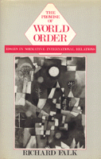

<body bgcolor="#FFFFFF" text="#000000" link="#0000FF" vlink="#CC0000" alink="#CC0000"><center><hr width="350" size="1" align="center" noshade>A penetrating analysis of militarism and international relationships<hr width="350" size="1" align="center" noshade><p><a href="https://cdcshoppingcart.uchicago.edu/Cart/ChicagoBook.aspx?ISBN=9780877225171&&PRESS=temple" target="_top">Buy this book!</a> | <a href="https://cdcshoppingcart.uchicago.edu/Cart/Cart.aspx?PRESS=temple" target="_top">View Cart</a> | <a href="https://cdcshoppingcart.uchicago.edu/Cart/Cart.aspx?PRESS=temple" target="_top">Check Out</a></p><p></p></center><!--none//--><h1>The Promise of World Order</h1>
<H2>Essays in Normative International Relations</H2>
<h3>Richard Falk</h3>
<P>cloth 0-87722-517-6 $37.95, Jan 88, <FONT COLOR=#990033>Out of Print</FONT>
<BR> 336 pp
</P><p>In a penetrating analysis of militarism and international relationships, Richard Falk proposes original and imaginative approaches to the problem of achieving world peace. While in recent decades mainstream policy-makers and theorists have dismissed world order adherents as utopian, idealistic, and dogmatic, Falk contends that the negative critical reception which erroneously pigeon-holed these efforts has been fixed and monolithic. He observes: "Our either/or occidental orientation needs to be enriched by the appreciation that many, but not all, interpretations of what is happening can be simultaneously valid and useful."
<p>Throughout the thirteen essays, Falk discusses the obstacles to establishing a global political framework, the ethical reasons for attempting to do so, and practical ways in which the task might be approached. Naming technocrats, traditionalists, terrorists, and ecological fanatics as equal dangers to the "spirit of compromise and diversity that makes politics and conflict tolerable," he deplores the use of terrorist methods by all sides to get headlines and results. And he urges the denationalizing of scholarship as a step toward facilitating world order inquiry.
<p>Controversial, visionary, interdisciplinary, and crucially important&#151<I>The Promise of World Order</I> attempts to assess and redefine national priorities, realign grassroots movements with planetary concerns, and suggest possibilities for "the uncreated future of humankind."
<BR>&nbsp;<h2>Contents</h2><P>
<p>1. The World Order Approach
<br>2. Lifting the Curse of Bipartisanship
<br>3. Nuclear Weapons and the End of Democracy
<br>4. Nuclear Weapons and the Renewal of Democracy
<br>5. The Global Setting and the Transition to Democracy
<br>6. Rethinking Neutrality in the Nuclear Age
<br>7. Beyond Deterrence: The Essential Political Challenge
<br>8. Can Decency Guide the Quest for Peace‘?
<br>9. Normative Initiative and Demilitarization: A Third System Approach
<br>10. Towards Security for the People
<br>11. The Future of World Order
<br>12. Technology and Politics: Shifting Balances
<br>13. The Spirit of Thoreau in the Age of Trident
</P><BR>&nbsp;<H2>About the Author(s)</H2>
<P><b>Richard Falk</b> is Albert C. Milbank Professor of International Law and Practice at the Center for International Studies, Princeton University.</P>
<BR><H2>Subject Categories</H2>
<p><A HREF="/tempress/philosophy.html" TARGET="_top">Philosophy and Ethics</a>
</p>
<p align="center"><a href="https://cdcshoppingcart.uchicago.edu/Cart/ChicagoBook.aspx?ISBN=9780877225171&&PRESS=temple" target="_top">Buy this book!</a> | <a href="https://cdcshoppingcart.uchicago.edu/Cart/Cart.aspx?PRESS=temple" target="_top">View Cart</a> | <a href="https://cdcshoppingcart.uchicago.edu/Cart/Cart.aspx?PRESS=temple" target="_top">Check Out</a></p><p><font face="Arial" size="1"><a href="copyright.html" onMouseOver="window.status='Web Copyright Policy';return true;" onMouseOut="window.status=''" title="Web Copyright Policy">&copy;</a> 2015 <a href="http://www.temple.edu" target="new" onMouseOver="window.status='Link to Temple University home page';return true;" onMouseOut="window.status=''" title="Link to Temple University home page">Temple University</a>. All Rights Reserved. http://www.temple.edu/tempress/titles/539_reg.html</font></p>